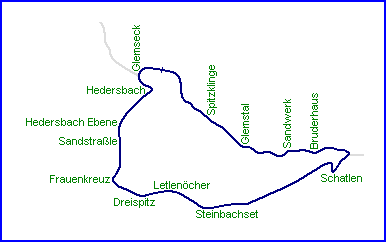
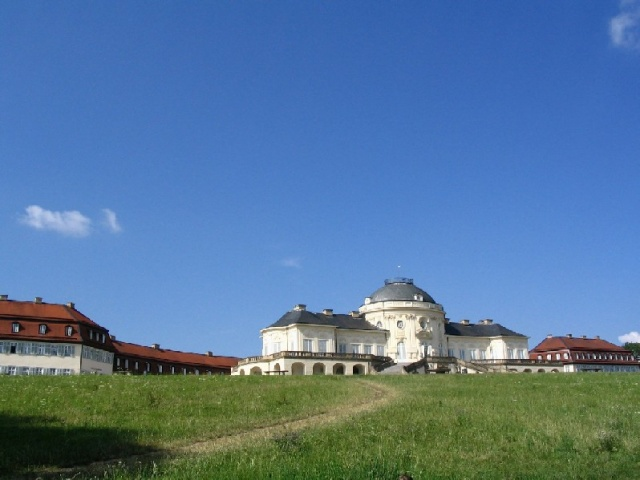
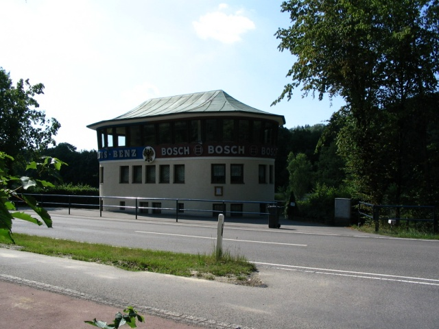
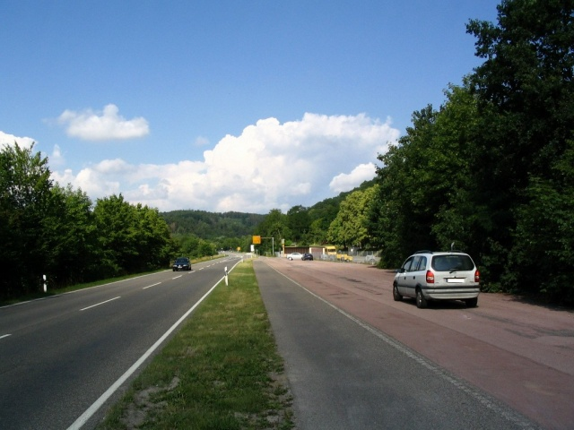
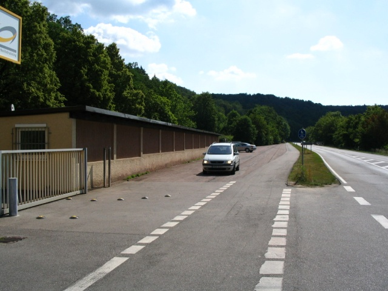
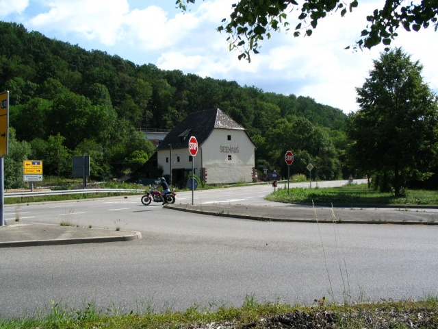
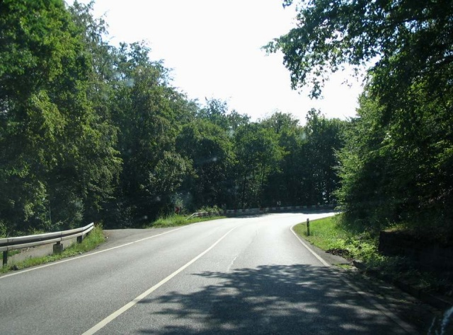
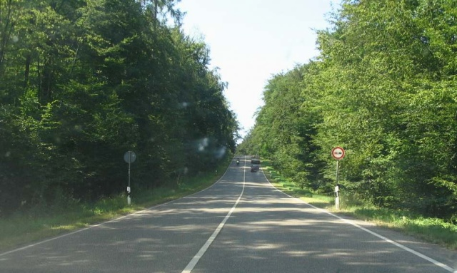
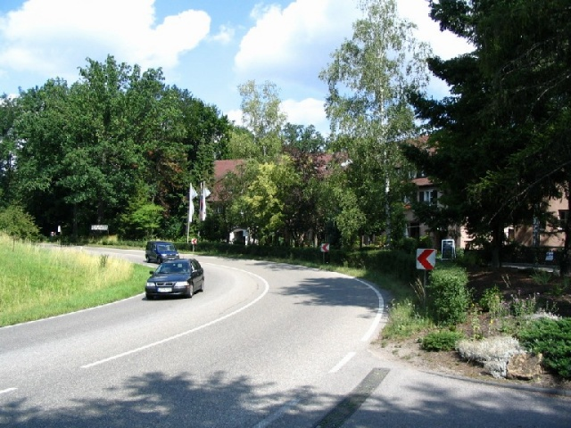
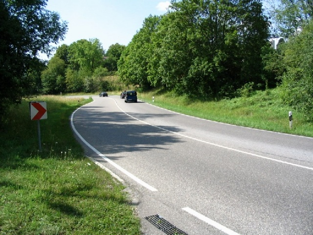

Solitude, Germany
Type: Street Circuit
Length: 7.146 Miles / 11.500 km
Used: 1925-1965
Photographs Taken: July 2004


Solitude Castle (rococo style). Photo taken from the road where the original layout
passed.


Photos from the pit lane


Turn 1 (Glemseck) looking back. It's a crossroad.

Just before Hedersbachkurve (a right hairpin). It's uphill.

After Hedersbachkurve, there is an incredible uphill (18 %)! My car is already climbing
uphill, but the road gets steeper in front.

This is the downhill esse at Schatten. It seems quite flat on these photos, but be sure it
isn't.

Return to racingcircuits.net's Photo Archive Main Index
Photographs & Text ©Michel Marti. Reproduced here with kind permission.